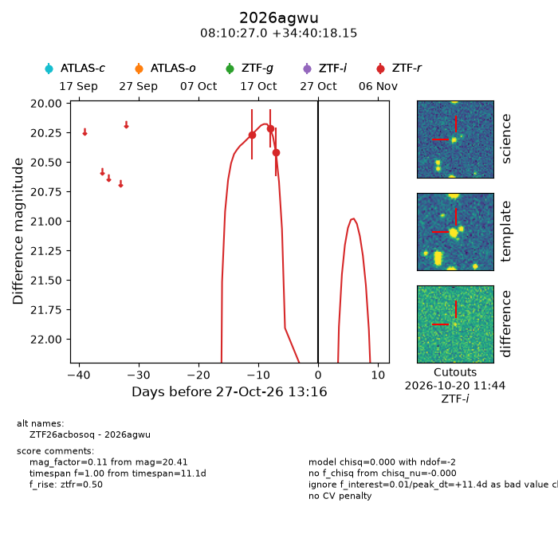
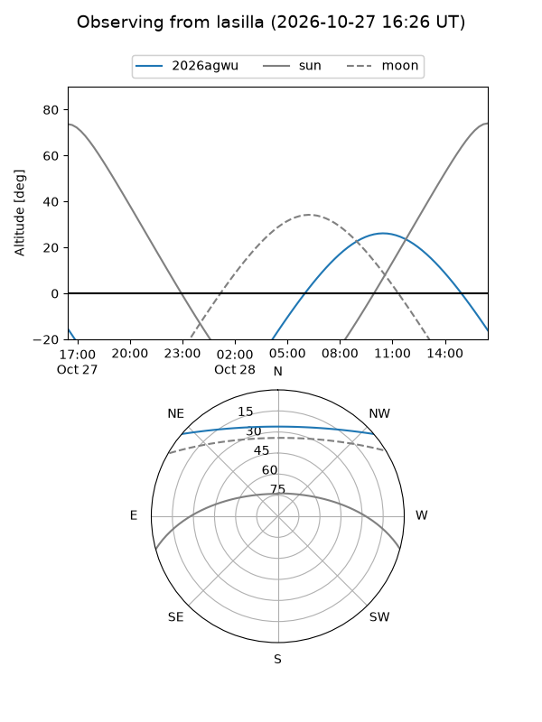
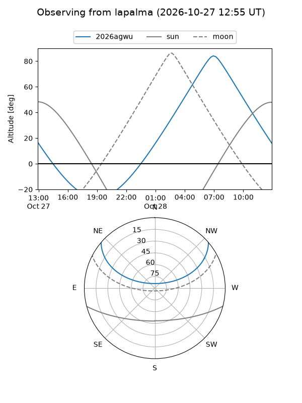
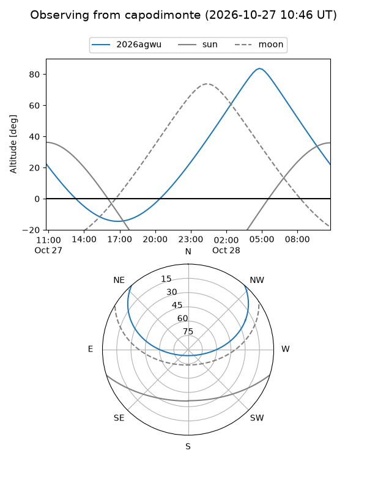
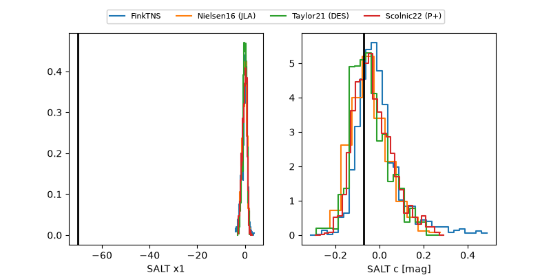

2026agwu
Target 2026agwu at 2026-10-27 13:18
Aliases and brokers:
FINK-ZTF: ztf.fink-portal.org/ZTF26acbosoq
Lasair-ZTF: lasair-ztf.lsst.ac.uk/objects/ZTF26acbosoq
ALeRCE-ZTF: alerce.online/object/ZTF26acbosoq
YSE-PZ: ziggy.ucolick.org/yse/transient_detail/2026agwu
TNS name: wis-tns.org/object/2026agwu
Direct TNS query: direct search
alt names
ZTF26acbosoq (ztf,fink_ztf)
2026agwu (tns,yse)
Coordinates:
equatorial (ra, dec) = 122.6124,+34.67171
equatorial (HMS+DMS) = 08:10:26.98,+34:40:18.15
galactic (l, b) = (186.8107,+30.44891)
Flags:
peak dt: +11.4
Photometry:
last ztfr=20.41
3 ztfr detections
Lightcurve

Visibility



Additional plots
